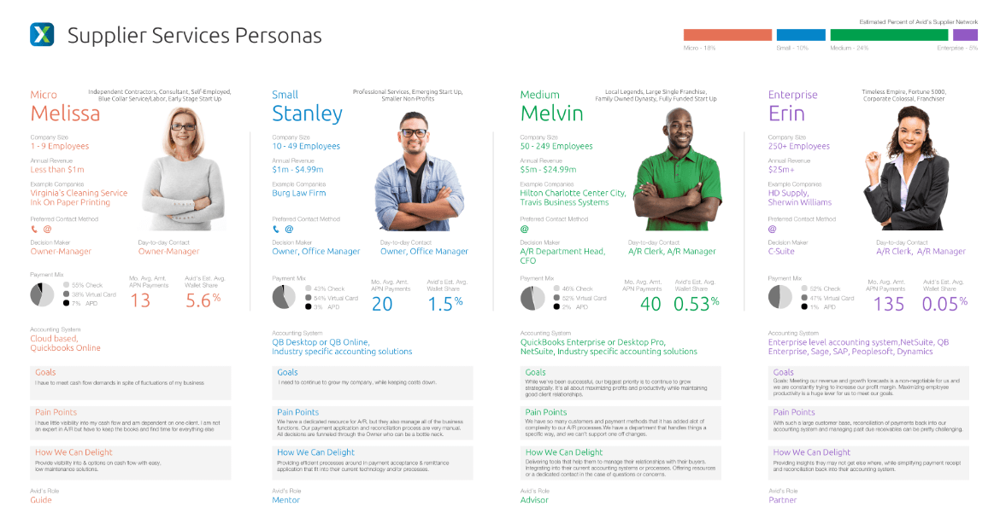

Avidxchange had very basic ‘sales personas’ powerpoint that had been passed around for years. There was a growing need to have a better idea of who our actual users were. I sought out to create a set of personas that better represented our customers using real data. My goal was to create something that was easy to understand and provided value to as many Avidxchange employees as possible, and not just be created then forgotten.
Working with teammates from sales, product, marketing and customer support, I began compiling customer data, analytic data and interviewing users. A third party service was used to enrich the metadata from a Excel document of over 1000 customers (companies). I now had employee size and revenue numbers, along with other valuable data like payment and invoice volume. Working with product marketing I segmented our customers into 4 categories: Micro, Small, Medium, and Enterprise.
Talking to Users
I reached out to 4 to 5 customers from each category to discuss how they use the products and their pain points. A Micro customer usually has 9 or less employees, therefore the typical user is the owner and financial manager of the company. As company size increases, the user of the products change, along with their needs. A Micro customer might value cash flow visibility, whereas a larger customer needs automation or reconciliation into an enterprise grade accounting system. Another major difference between company sizes what the type of accounting systems that were used. These insights are invaluable when deciding on new features and support.
The Result
Based on the data, I created a hybrid company / user persona. This document would contain relevant actionable information from both the enriched company data, as well as the typical user within those company categories. This document was then presented and distributed across the company to use for product development, marketing and sales.
In-depth
Each company category is grouped from smaller to larger based on a number of metrics (Employee count, revenue, imvoice volume, accounting system). Within each company is the persona of the most common user of Avidchange products. We used cute east-to-remember names for the companies/personas. The bar chart in the top right represents percentage of customers.
‹ Company & Persona Overview
The top portion contains basic information about the company and the types of customers that Avidxchange would typically be interacting with and building products for. Example companies, for instance, allow us to form rich mental images of likely scenarios.
‹ Payments & Systems
The next section contains information on how these types of businesses utilize Avidxchange and the types of systems we would need to support.
‹ User Empathy
the final section has information on how we can empathise and understand our users goals, filters through the lens of their specific role and place within the industry.
Putting it to good Use
Once the personas were completed and vetted by the product marketing team, I got to work on disseminating it throughout the company. Executive and product management were given presentations on the new personas, sales team members were given printed versions, and a large version was placed on the wall for anyone to see.
The persona creation was a pre-cursor to a number of user journey workshops that I facilitaed at Avidxchange.